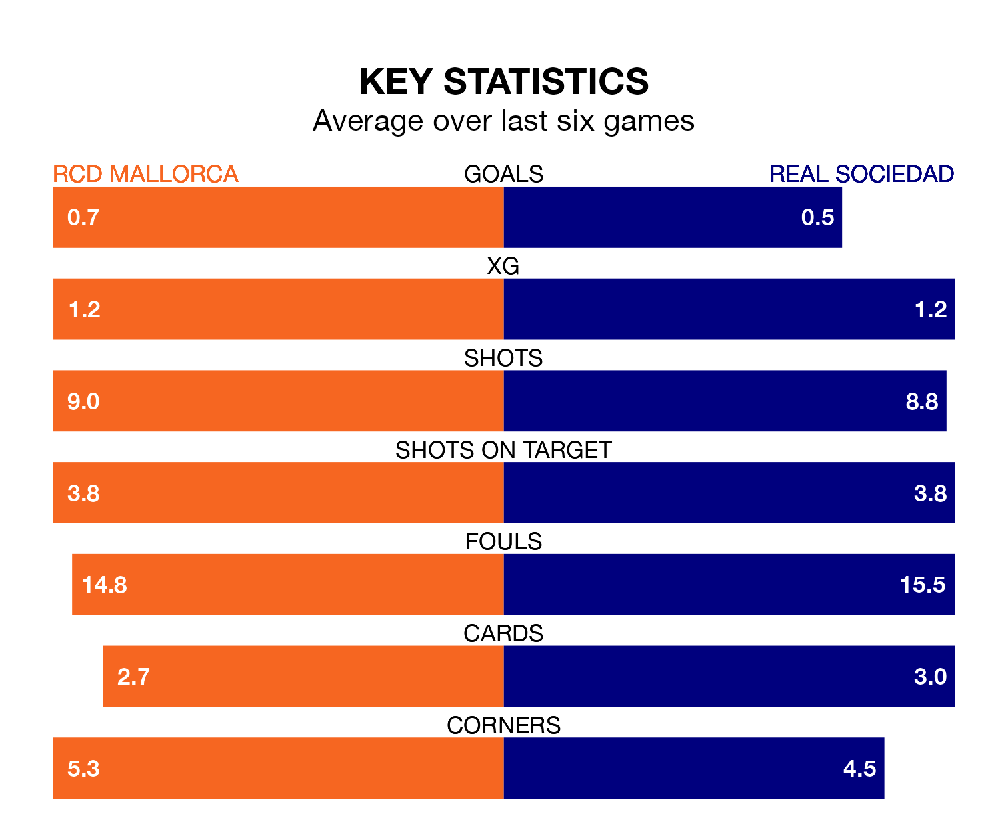

RCD Mallorca host Real Sociedad on Sunday at Estadi Mallorca Son Moix in La Liga.
In their last league match, on February 11, Mallorca beat Rayo Vallecano 2-1 at home, with goals from Antonio Sánchez and Vedat Muriqi.
La Real lost, 1-0 at home against CA Osasuna on February 10.
With Álex Remiro between the sticks, La Real can rely on one of the league's safest pair of hands. He has kept 10 clean sheets in his 23 appearances this season, and only one other 'keeper – Athletic Club Bilbao's Unai Simón – has been able to prevent the opposition scoring on more occasions in La Liga.
In Mallorca's net, Predrag Rajković has six clean sheets in 24 games. He has conceded a goal every 74 minutes, 90% more often than the 144 minutes between goals for Remiro Gargallo.
In the last 10 years, Mallorca and La Real have played each other on nine occasions. La Real won seven of them and they drew twice.
On average, Mallorca scored 0.1 goals and la Real 1.2 in those matches.
Their last meeting was on February 6, when they played out a 0-0 draw.
With 21 goals in 24 games so far this season, the home side are the league's joint-third-lowest scorers with 0.9 goals per game. And they are conceding at an average rate, letting in 31 goals at a rate of 1.3 per game.
La Real, meanwhile, are average scorers, with 1.3 goals per game. They have conceded 0.9 goals per game.
Mallorca are 16th in the table after 24 games, of which they have won four and drawn 11, earning 23 points.
The visitors are nine places ahead of Mallorca in seventh, with nine wins and 10 draws putting them on 37 points.
The hosts are in disappointing form in La Liga, with one win and two draws from their last six games.
With a win and three draws over that period, La Real's form is slightly better – they have taken six points from 18, compared to Mallorca's five.
Updated: 09:02 (UTC), 13/02/24